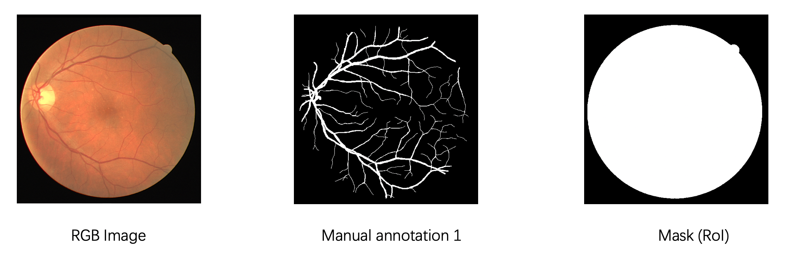

<!DOCTYPE html>
<html lang="en" dir="auto">

<head><meta charset="utf-8">
<meta http-equiv="X-UA-Compatible" content="IE=edge">
<meta name="viewport" content="width=device-width, initial-scale=1, shrink-to-fit=no">

<link rel="stylesheet" href="https://cdn.jsdelivr.net/npm/katex@0.12.0/dist/katex.min.css">
<script defer src="https://cdn.jsdelivr.net/npm/katex@0.12.0/dist/katex.min.js"></script>

<script defer src="https://cdn.jsdelivr.net/npm/katex@0.12.0/dist/contrib/auto-render.min.js" onload="renderMathInElement(document.body);"></script>

<script>
    document.addEventListener("DOMContentLoaded", function() {
        renderMathInElement(document.body, {
            delimiters: [
                {left: "$$", right: "$$", display: true},
                {left: "$", right: "$", display: false}
            ]
        });
    });
</script>
<meta name="robots" content="index, follow">
<title>视网膜血管分割 Retinal vessel segmentation | Landodo&#39;s NoteBook</title>
<meta name="keywords" content="CNN, 医学图像分割, 论文阅读" />
<meta name="description" content="视网膜血管分割 Retinal vessel segmentation 1. 数据集（Datasets） 视网膜血管分割的公开集最常用的有 DRIVE、STARE 和 CHASE_DB。 1.1 DRIVE DRIVE: Digital Retinal Images for Vessel Extraction">
<meta name="author" content="">
<link rel="canonical" href="http://landodo.github.io/posts/20210516-retinal-vesse-segmentation/" />
<link crossorigin="anonymous" href="/assets/css/stylesheet.min.c88963fe2d79462000fd0fb1b3737783c32855d340583e4523343f8735c787f0.css" integrity="sha256-yIlj/i15RiAA/Q&#43;xs3N3g8MoVdNAWD5FIzQ/hzXHh/A=" rel="preload stylesheet" as="style">
<script defer crossorigin="anonymous" src="/assets/js/highlight.min.4dcb3c4f38462f66c6b6137227726f5543cb934cca9788f041c087e374491df2.js" integrity="sha256-Tcs8TzhGL2bGthNyJ3JvVUPLk0zKl4jwQcCH43RJHfI="
    onload="hljs.initHighlightingOnLoad();"></script>
<link rel="icon" href="http://landodo.github.io/favicon.ico">
<link rel="icon" type="image/png" sizes="16x16" href="http://landodo.github.io/favicon-16x16.png">
<link rel="icon" type="image/png" sizes="32x32" href="http://landodo.github.io/favicon-32x32.png">
<link rel="apple-touch-icon" href="http://landodo.github.io/apple-touch-icon.png">
<link rel="mask-icon" href="http://landodo.github.io/safari-pinned-tab.svg">
<meta name="theme-color" content="#2e2e33">
<meta name="msapplication-TileColor" content="#2e2e33">
<noscript>
    <style>
        #theme-toggle,
        .top-link {
            display: none;
        }

    </style>
    <style>
        @media (prefers-color-scheme: dark) {
            :root {
                --theme: rgb(29, 30, 32);
                --entry: rgb(46, 46, 51);
                --primary: rgb(218, 218, 219);
                --secondary: rgb(155, 156, 157);
                --tertiary: rgb(65, 66, 68);
                --content: rgb(196, 196, 197);
                --hljs-bg: rgb(46, 46, 51);
                --code-bg: rgb(55, 56, 62);
                --border: rgb(51, 51, 51);
            }

            .list {
                background: var(--theme);
            }

            .list:not(.dark)::-webkit-scrollbar-track {
                background: 0 0;
            }

            .list:not(.dark)::-webkit-scrollbar-thumb {
                border-color: var(--theme);
            }
        }

    </style>
</noscript><meta property="og:title" content="视网膜血管分割 Retinal vessel segmentation" />
<meta property="og:description" content="视网膜血管分割 Retinal vessel segmentation 1. 数据集（Datasets） 视网膜血管分割的公开集最常用的有 DRIVE、STARE 和 CHASE_DB。 1.1 DRIVE DRIVE: Digital Retinal Images for Vessel Extraction" />
<meta property="og:type" content="article" />
<meta property="og:url" content="http://landodo.github.io/posts/20210516-retinal-vesse-segmentation/" /><meta property="article:section" content="posts" />
<meta property="article:published_time" content="2021-05-16T10:17:29&#43;08:00" />
<meta property="article:modified_time" content="2021-05-16T10:17:29&#43;08:00" />

<meta name="twitter:card" content="summary"/>
<meta name="twitter:title" content="视网膜血管分割 Retinal vessel segmentation"/>
<meta name="twitter:description" content="视网膜血管分割 Retinal vessel segmentation 1. 数据集（Datasets） 视网膜血管分割的公开集最常用的有 DRIVE、STARE 和 CHASE_DB。 1.1 DRIVE DRIVE: Digital Retinal Images for Vessel Extraction"/>


<script type="application/ld+json">
{
  "@context": "https://schema.org",
  "@type": "BreadcrumbList",
  "itemListElement": [
    {
      "@type": "ListItem",
      "position":  1 ,
      "name": "Posts",
      "item": "http://landodo.github.io/posts/"
    }, 
    {
      "@type": "ListItem",
      "position":  2 ,
      "name": "视网膜血管分割 Retinal vessel segmentation",
      "item": "http://landodo.github.io/posts/20210516-retinal-vesse-segmentation/"
    }
  ]
}
</script>
<script type="application/ld+json">
{
  "@context": "https://schema.org",
  "@type": "BlogPosting",
  "headline": "视网膜血管分割 Retinal vessel segmentation",
  "name": "视网膜血管分割 Retinal vessel segmentation",
  "description": "视网膜血管分割 Retinal vessel segmentation 1. 数据集（Datasets） 视网膜血管分割的公开集最常用的有 DRIVE、STARE 和 CHASE_DB。 1.1 DRIVE DRIVE: Digital Retinal Images for Vessel Extraction",
  "keywords": [
    "CNN", "医学图像分割", "论文阅读"
  ],
  "articleBody": "视网膜血管分割 Retinal vessel segmentation 1. 数据集（Datasets） 视网膜血管分割的公开集最常用的有 DRIVE、STARE 和 CHASE_DB。\n1.1 DRIVE DRIVE: Digital Retinal Images for Vessel Extraction (https://drive.grand-challenge.org/)\nDRIVE 数据库的图像来自荷兰的一个糖尿病视网膜病变筛查项目，筛查人群包括 400 名年龄在 25-90 岁的糖尿病患者。随机抽取了 40 张照片，其中 33 张没有显示任何糖尿病视网膜病变的迹象，7 张显示有轻度早期糖尿病视网膜病变的迹象（25_training、26_training、32_training、03_test、08_test、14_test、17_test）。\nDRIVE 数据集基本信息如下：\n 每张图片的的分辨率为 584 × 565 pixels，3 通道的彩色图片。 训练集 20 张图像，测试集 20 张图像。对于测试案例，有两个人工分割：一个被用作 gold standard，另一个可用于比较计算机生成的分割与独立的人类观察者的分割。 mask 表示 region of interest (RoI)。  DRIVE 数据库的建立是为了能够对视网膜图像中的血管进行分割的比较研究，被用于诊断、筛查、治疗和评估各种心血管和眼科疾病。\n此外，每个人的视网膜血管树都是独一无二的，可用于生物识别。\n1.2 STARE STARE: STructured Analysis of the Retina (https://cecas.clemson.edu/~ahoover/stare/probing/index.html)\nSTARE 数据基本信息：\n 每张图片的分辨率为 700×605 pixels。 共 20 张图片。  1.3 CHASE_DB1 https://blogs.kingston.ac.uk/retinal/chasedb1/\n  每张图片的分辨率为 700×605 pixels。\n  14 个学生的左眼和右眼图像，共 28 张。\n  LadderNet LadderNet：一种基于 U-Net 的多路径医学图像分割网络。\n作者：Juntang Zhuang（https://juntang-zhuang.github.io/），本科清华，目前在 Yale University Ph.D. in Biomedical Engineering。\n 论文时间：ArXiv 2018 年 10 月 论文地址：https://arxiv.org/abs/1810.07810  Abstract U-Net、Attention U-Net、R2-UNet 和 U-Net with residual blocks or blocks with dense con\u0002nections 的信息流的路径数量是十分有限的。本篇论文提出的 LadderNet， 由于有 skip connections、residual blocks，所以有更多的信息流路径，可以被看作是全卷积网络（FCN）的集合。\n在 DRIVE 和 CHASE_DB1 两个视网膜中的血管分割图像数据集上进行测试。\n目前在视网膜分割任务上，基于 GAN 的方法（RV-GAN）取得了 SOTA，DRIVE（AUC = 0.989），CHASE_DB1 （AUC = 0.991）。\nLadderNet 在 DRIVE 和 CHASE_DB1 上都可以排在前十，相比于 U-Net，AUC 提升了 0.01。\n1 Introduction 在各种分割网络的变体中，U-Net 是医学图像分析中使用最广泛的结构，主要是因为带有跳跃连接的 encoder-decoder 结构允许有效的信息流，并且在没有足够大的数据集的情况下表现良好。\n各种 U-Net 的变体，仍属于 encoder-decoder 结构，其中信息流的路径数量是有限的，这是本篇论文的背景。\n However, all these U-Net variants still fall into the encoder\u0002 decoder structure, where the number of paths for information flow is limited. 本篇论文提出了 LadderNet，一种用于语义分割的卷积网络，具有更多的信息流路径。LadderNet 可以被视为 FCN 的集合（即 FCN 是其一种特殊形式），并实验验证了 LadderNet 在视网膜血管分割任务中的优异表现。在视网膜图像中的血管分割任务上验证了其优越性能。\n2. Methons LadderNet 有更多的信息流路径（more paths of information flow）。\nA~E 表示不同的空间尺度的特征图；1、3 为 encoder 分支，2、4 为 decoder 分支。从一个级别到下一个级别，通道的数量增加一倍（例如，A 到 B）。\nLadderNet 和 U-Net 的联系 （1）LadderNet 可以视为 U-Net 的链，1 和 2 看做一个 U-Net，3 和 4 看做是另一个 U-Net。LadderNet 包含两个 U-Net，也可以连接更多的 U-Net 来形成复杂的网络结构。\nLadderNet 的 skip connection 使用的 sum，而 U-Net 使用的是 Concate。\n（2）LadderNet 也可以被看作是多个 FCN 的集合体，残差连接提供了多条信息流路径。\nLadderNet 信息流路径总数随着 encoder-decoder 对的数量和空间层次的数量呈指数级增长。我简单数了一下 LadderNet 的从输入到输出，共有 75 条路径。\nLadderNet 取得较高的精度的原因可以总结为：LadderNet has the potential to capture more complicated features and produce a higher accuracy.\nShared-weights residual block 更多的 encoder-decoder 分支将增加参数的数量和训练的难度。为了解决这个问题，本篇论文提出共享权重的残差块（Fig 1）。受 RCNN 的启发，同一区块中的两个卷积层可以看做是一个递归层。除了两个批处理规范化层是不同的。\n共享权重的残差块结合了 skip connection、recurrent convolution 和 dropout 正则化的力量，参数要比标准的残差块少得多。\n参数量情况 LadderNet vs U-Net，前者的参数量减少了 97%（使用 torchsummary 中的 summary）。\nTotal params: 921,902 Trainable params: 921,902 Non-trainable params: 0 Total mult-adds (M): 41.66 Total params: 31,031,810 Trainable params: 31,031,810 Non-trainable params: 0 Total mult-adds (G): 16.45 对于输入的一张 1×48×48 的特征图，最后得到 2×48×48 的输出。通道数作者的是实现是 (1, 10, 20, 40, 80, 126)，有其他的实现使用的 (1, 16, 32, 64, 128, 128)，level E 不加倍。\nExperiment DRIVE 数据集：40 张彩色图片，20 张训练集，20 张测试集，每张图片 565×584 pixels。为了增加训练的样本，随机采样 190,000 个 48×48 pixels 的 patch，10% 用作验证集。\nCHASE_DB1 数据集：28 张彩色图片，20 张做训练集，8 张做测试集，每张图片 700×605 pixels。随机采样 760,000 个 48×48 pixels 的 patch，10% 用作验证集。\n在数据预处理阶段，3 通道被转换为单通道。\n数据预处理 https://github.com/juntang-zhuang/LadderNet/blob/master/lib/pre_processing.py\n（1）提取彩色眼底图像血管与背景对比度较高的绿色通道；并利用双边滤波对其降噪。\n 在进行 RGB2gray 时，给予 g 通道更高的权重。  #convert RGB image in black and white def rgb2gray(rgb):  assert (len(rgb.shape)==4) #4D arrays  assert (rgb.shape[1]==3)  # 通道顺序为：B G R.  bn_imgs = rgb[:,0,:,:]*0.299 + rgb[:,1,:,:]*0.587 + rgb[:,2,:,:]*0.114  bn_imgs = np.reshape(bn_imgs,(rgb.shape[0],1,rgb.shape[2],rgb.shape[3]))  return bn_imgs （2）限制对比度直方图均衡化(CLAHE) 抑制噪声、提升对比度；全局锐化，抑制伪影、黄斑等噪声。\n（3）局部自适应 Gamma 矫正，抑制光照不均匀因素与中心线反射现象。\n（4）尺度形态学 Top-Hot 变换。\n#My pre processing (use for both training and testing!) def my_PreProc(data):  assert(len(data.shape)==4)  assert (data.shape[1]==3) #Use the original images  #black-white conversion  train_imgs = rgb2gray(data)  #my preprocessing:  train_imgs = dataset_normalized(train_imgs)  train_imgs = clahe_equalized(train_imgs)  train_imgs = adjust_gamma(train_imgs, 1.2)  train_imgs = train_imgs/255. #reduce to 0-1 range  return train_imgs 评估指标 Accuracy (AC), Sensitivity (SE), Specificity (SP) and F1-score.\nTrue Positive (TP), True Negative (TN), False Positive (FP) and False Negative (FN).\n实验结果  在实验时，对于 DRIVE 数据集，训练集 20 张 3×584×565 的图像，进行预处理，数据增强后，得到 100,000 个 1×64×64 patch。在华西的电脑上训练一个 Epoch 耗时：13 分钟。\n",
  "wordCount" : "2390",
  "inLanguage": "en",
  "datePublished": "2021-05-16T10:17:29+08:00",
  "dateModified": "2021-05-16T10:17:29+08:00",
  "mainEntityOfPage": {
    "@type": "WebPage",
    "@id": "http://landodo.github.io/posts/20210516-retinal-vesse-segmentation/"
  },
  "publisher": {
    "@type": "Organization",
    "name": "Landodo's NoteBook",
    "logo": {
      "@type": "ImageObject",
      "url": "http://landodo.github.io/favicon.ico"
    }
  }
}
</script>
</head>

<body class="" id="top">
<script>
    if (localStorage.getItem("pref-theme") === "dark") {
        document.body.classList.add('dark');
    } else if (localStorage.getItem("pref-theme") === "light") {
        document.body.classList.remove('dark')
    } else if (window.matchMedia('(prefers-color-scheme: dark)').matches) {
        document.body.classList.add('dark');
    }

</script>

<header class="header">
    <nav class="nav">
        <div class="logo">
            <a href="http://landodo.github.io/" accesskey="h" title="Landodo&#39;s NoteBook (Alt + H)">Landodo&#39;s NoteBook</a>
            <span class="logo-switches">
                <button id="theme-toggle" accesskey="t" title="(Alt + T)">
                    <svg id="moon" xmlns="http://www.w3.org/2000/svg" width="24" height="24" viewBox="0 0 24 24"
                        fill="none" stroke="currentColor" stroke-width="2" stroke-linecap="round"
                        stroke-linejoin="round">
                        <path d="M21 12.79A9 9 0 1 1 11.21 3 7 7 0 0 0 21 12.79z"></path>
                    </svg>
                    <svg id="sun" xmlns="http://www.w3.org/2000/svg" width="24" height="24" viewBox="0 0 24 24"
                        fill="none" stroke="currentColor" stroke-width="2" stroke-linecap="round"
                        stroke-linejoin="round">
                        <circle cx="12" cy="12" r="5"></circle>
                        <line x1="12" y1="1" x2="12" y2="3"></line>
                        <line x1="12" y1="21" x2="12" y2="23"></line>
                        <line x1="4.22" y1="4.22" x2="5.64" y2="5.64"></line>
                        <line x1="18.36" y1="18.36" x2="19.78" y2="19.78"></line>
                        <line x1="1" y1="12" x2="3" y2="12"></line>
                        <line x1="21" y1="12" x2="23" y2="12"></line>
                        <line x1="4.22" y1="19.78" x2="5.64" y2="18.36"></line>
                        <line x1="18.36" y1="5.64" x2="19.78" y2="4.22"></line>
                    </svg>
                </button>
            </span>
        </div>
        <ul id="menu">
            <li>
                <a href="http://landodo.github.io/search" title="🔍Search (Alt &#43; /)" accesskey=/>
                    <span>🔍Search</span>
                </a>
            </li>
            <li>
                <a href="http://landodo.github.io/" title="Home">
                    <span>Home</span>
                </a>
            </li>
            <li>
                <a href="http://landodo.github.io/archives/" title="Archives">
                    <span>Archives</span>
                </a>
            </li>
            <li>
                <a href="http://landodo.github.io/tags" title="Tag">
                    <span>Tag</span>
                </a>
            </li>
            <li>
                <a href="http://landodo.github.io/about" title="About">
                    <span>About</span>
                </a>
            </li>
            <li>
                <a href="http://landodo.github.io/cs-zoo" title="CS ZOO">
                    <span>CS ZOO</span>
                </a>
            </li>
        </ul>
    </nav>
</header>
<main class="main">

<article class="post-single">
  <header class="post-header">
    <div class="breadcrumbs"><a href="http://landodo.github.io/">Home</a>&nbsp;»&nbsp;<a href="http://landodo.github.io/posts/">Posts</a></div>
    <h1 class="post-title">
      视网膜血管分割 Retinal vessel segmentation
    </h1>
    <div class="post-meta"><span title='2021-05-16 10:17:29 +0800 CST'>May 16, 2021</span>&nbsp;·&nbsp;5 min&nbsp;·&nbsp;2390 words

</div>
  </header> <div class="toc">
    <details  open>
        <summary accesskey="c" title="(Alt + C)">
            <span class="details">Table of Contents</span>
        </summary>

        <div class="inner"><ul>
                <li>
                    <a href="#%e8%a7%86%e7%bd%91%e8%86%9c%e8%a1%80%e7%ae%a1%e5%88%86%e5%89%b2-retinal-vessel-segmentation" aria-label="视网膜血管分割 Retinal vessel segmentation">视网膜血管分割 Retinal vessel segmentation</a><ul>
                        
                <li>
                    <a href="#1-%e6%95%b0%e6%8d%ae%e9%9b%86datasets" aria-label="1. 数据集（Datasets）">1. 数据集（Datasets）</a><ul>
                        
                <li>
                    <a href="#11-drive" aria-label="1.1 DRIVE">1.1 DRIVE</a></li>
                <li>
                    <a href="#12-stare" aria-label="1.2 STARE">1.2 STARE</a></li>
                <li>
                    <a href="#13-chase_db1" aria-label="1.3 CHASE_DB1">1.3 CHASE_DB1</a></li></ul>
                </li></ul>
                </li>
                <li>
                    <a href="#laddernet" aria-label="LadderNet">LadderNet</a><ul>
                        
                <li>
                    <a href="#abstract" aria-label="Abstract">Abstract</a></li>
                <li>
                    <a href="#1-introduction" aria-label="1 Introduction">1 Introduction</a></li>
                <li>
                    <a href="#2-methons" aria-label="2. Methons">2. Methons</a><ul>
                        
                <li>
                    <a href="#laddernet-%e5%92%8c-u-net-%e7%9a%84%e8%81%94%e7%b3%bb" aria-label="LadderNet 和 U-Net 的联系">LadderNet 和 U-Net 的联系</a></li>
                <li>
                    <a href="#shared-weights-residual-block" aria-label="Shared-weights residual block">Shared-weights residual block</a></li></ul>
                </li>
                <li>
                    <a href="#experiment" aria-label="Experiment">Experiment</a><ul>
                        
                <li>
                    <a href="#%e6%95%b0%e6%8d%ae%e9%a2%84%e5%a4%84%e7%90%86" aria-label="数据预处理">数据预处理</a></li>
                <li>
                    <a href="#%e8%af%84%e4%bc%b0%e6%8c%87%e6%a0%87" aria-label="评估指标">评估指标</a></li>
                <li>
                    <a href="#%e5%ae%9e%e9%aa%8c%e7%bb%93%e6%9e%9c" aria-label="实验结果">实验结果</a>
                </li>
            </ul>
            </li>
            </ul>
            </li>
            </ul>
        </div>
    </details>
</div>

  <div class="post-content"><h1 id="视网膜血管分割-retinal-vessel-segmentation">视网膜血管分割 Retinal vessel segmentation<a hidden class="anchor" aria-hidden="true" href="#视网膜血管分割-retinal-vessel-segmentation">#</a></h1>
<h2 id="1-数据集datasets">1. 数据集（Datasets）<a hidden class="anchor" aria-hidden="true" href="#1-数据集datasets">#</a></h2>
<p>视网膜血管分割的公开集最常用的有 DRIVE、STARE 和 CHASE_DB。</p>
<h3 id="11-drive">1.1 DRIVE<a hidden class="anchor" aria-hidden="true" href="#11-drive">#</a></h3>
<p>DRIVE: <!-- raw HTML omitted -->D<!-- raw HTML omitted -->igital <!-- raw HTML omitted -->R<!-- raw HTML omitted -->etinal <!-- raw HTML omitted -->I<!-- raw HTML omitted -->mages for <!-- raw HTML omitted -->V<!-- raw HTML omitted -->essel <!-- raw HTML omitted -->E<!-- raw HTML omitted -->xtraction (<a href="https://drive.grand-challenge.org/">https://drive.grand-challenge.org/</a>)</p>
<p>DRIVE 数据库的图像来自荷兰的一个糖尿病视网膜病变筛查项目，筛查人群包括 400 名年龄在 25-90 岁的糖尿病患者。随机抽取了 40 张照片，其中 33 张没有显示任何糖尿病视网膜病变的迹象，7 张显示有轻度早期糖尿病视网膜病变的迹象（25_training、26_training、32_training、03_test、08_test、14_test、17_test）。</p>
<p>
</p>
<p>DRIVE 数据集基本信息如下：</p>
<ul>
<li>每张图片的的分辨率为 584 × 565 pixels，3 通道的彩色图片。</li>
<li>训练集 20 张图像，测试集 20 张图像。对于测试案例，有两个人工分割：一个被用作  gold standard，另一个可用于比较计算机生成的分割与独立的人类观察者的分割。</li>
<li>mask 表示 region of interest (RoI)。</li>
</ul>
<p>DRIVE 数据库的建立是为了能够对视网膜图像中的血管进行分割的比较研究，被用于诊断、筛查、治疗和评估各种心血管和眼科疾病。</p>
<p>此外，每个人的视网膜血管树都是独一无二的，可用于生物识别。</p>
<h3 id="12-stare">1.2 STARE<a hidden class="anchor" aria-hidden="true" href="#12-stare">#</a></h3>
<p>STARE: <!-- raw HTML omitted -->ST<!-- raw HTML omitted -->ructured <!-- raw HTML omitted -->A<!-- raw HTML omitted -->nalysis of the <!-- raw HTML omitted -->Re<!-- raw HTML omitted -->tina (<a href="https://cecas.clemson.edu/~ahoover/stare/probing/index.html">https://cecas.clemson.edu/~ahoover/stare/probing/index.html</a>)</p>
<p>
</p>
<p>STARE 数据基本信息：</p>
<ul>
<li>每张图片的分辨率为 700×605 pixels。</li>
<li>共 20 张图片。</li>
</ul>
<h3 id="13-chase_db1">1.3 CHASE_DB1<a hidden class="anchor" aria-hidden="true" href="#13-chase_db1">#</a></h3>
<p><a href="https://blogs.kingston.ac.uk/retinal/chasedb1/">https://blogs.kingston.ac.uk/retinal/chasedb1/</a></p>
<p>
</p>
<ul>
<li>
<p>每张图片的分辨率为 700×605 pixels。</p>
</li>
<li>
<p>14 个学生的左眼和右眼图像，共 28 张。</p>
</li>
</ul>
<h1 id="laddernet">LadderNet<a hidden class="anchor" aria-hidden="true" href="#laddernet">#</a></h1>
<p>
</p>
<p>LadderNet：一种基于 U-Net 的多路径医学图像分割网络。</p>
<p>作者：Juntang Zhuang（<a href="https://juntang-zhuang.github.io/">https://juntang-zhuang.github.io/</a>），本科清华，目前在 Yale University Ph.D. in Biomedical Engineering。</p>
<ul>
<li>论文时间：ArXiv 2018 年 10 月</li>
<li>论文地址：<a href="https://arxiv.org/abs/1810.07810">https://arxiv.org/abs/1810.07810</a></li>
</ul>
<h2 id="abstract">Abstract<a hidden class="anchor" aria-hidden="true" href="#abstract">#</a></h2>
<p>U-Net、Attention U-Net、R2-UNet 和 U-Net with residual blocks or blocks with dense connections 的信息流的路径数量是十分有限的。本篇论文提出的 LadderNet， 由于有 skip connections、residual blocks，所以有<!-- raw HTML omitted -->更多的信息流路径<!-- raw HTML omitted -->，可以被看作是全卷积网络（FCN）的集合。</p>
<p>在 DRIVE 和 CHASE_DB1 两个视网膜中的血管分割图像数据集上进行测试。</p>
<p>目前在视网膜分割任务上，基于 GAN 的方法（RV-GAN）取得了 SOTA，DRIVE（AUC = 0.989），CHASE_DB1 （AUC = 0.991）。</p>
<p>LadderNet 在 DRIVE 和 CHASE_DB1 上都可以排在前十，相比于 U-Net，AUC 提升了 0.01。</p>
<p>
</p>
<h2 id="1-introduction">1 Introduction<a hidden class="anchor" aria-hidden="true" href="#1-introduction">#</a></h2>
<p>在各种分割网络的变体中，U-Net 是医学图像分析中使用最广泛的结构，主要是因为带有跳跃连接的 encoder-decoder 结构允许有效的信息流，并且在没有足够大的数据集的情况下表现良好。</p>
<p>各种 U-Net 的变体，仍属于 encoder-decoder 结构，其中信息流的路径数量是有限的，这是本篇论文的背景。</p>
<blockquote>
<p>However, all these U-Net variants still fall into the encoder decoder structure, where <!-- raw HTML omitted -->the number of paths for information flow is limited.<!-- raw HTML omitted --></p>
</blockquote>
<p>本篇论文提出了 LadderNet，一种用于语义分割的卷积网络，<strong>具有更多的信息流路径</strong>。LadderNet 可以被视为 FCN 的集合（即 FCN 是其一种特殊形式），并实验验证了 LadderNet 在视网膜血管分割任务中的优异表现。在视网膜图像中的血管分割任务上验证了其优越性能。</p>
<h2 id="2-methons">2. Methons<a hidden class="anchor" aria-hidden="true" href="#2-methons">#</a></h2>
<p>LadderNet  有更多的信息流路径（more paths of information flow）。</p>
<p>
</p>
<p>A~E 表示不同的空间尺度的特征图；1、3 为 encoder 分支，2、4 为 decoder 分支。从一个级别到下一个级别，通道的数量增加一倍（例如，A 到 B）。</p>
<h3 id="laddernet-和-u-net-的联系">LadderNet 和 U-Net 的联系<a hidden class="anchor" aria-hidden="true" href="#laddernet-和-u-net-的联系">#</a></h3>
<p><strong>（1）LadderNet 可以视为 U-Net 的链</strong>，1 和 2 看做一个 U-Net，3 和 4 看做是另一个 U-Net。LadderNet  包含两个 U-Net，也可以连接更多的 U-Net 来形成复杂的网络结构。</p>
<p>LadderNet 的 skip connection 使用的 sum，而 U-Net 使用的是 Concate。</p>
<p><strong>（2）LadderNet 也可以被看作是多个 FCN 的集合体</strong>，残差连接提供了多条信息流路径。</p>
<p>LadderNet 信息流路径总数随着 encoder-decoder 对的数量和空间层次的数量呈指数级增长。我简单数了一下 LadderNet 的从输入到输出，共有 75 条路径。</p>
<p>LadderNet 取得较高的精度的原因可以总结为：LadderNet has the potential to capture more complicated features and produce a higher accuracy.</p>
<h3 id="shared-weights-residual-block">Shared-weights residual block<a hidden class="anchor" aria-hidden="true" href="#shared-weights-residual-block">#</a></h3>
<p>更多的 encoder-decoder 分支将增加参数的数量和训练的难度。为了解决这个问题，本篇论文提出共享权重的残差块（Fig 1）。受 RCNN 的启发，同一区块中的两个卷积层可以看做是一个递归层。除了两个批处理规范化层是不同的。</p>
<p>共享权重的残差块结合了 skip connection、recurrent convolution 和 dropout 正则化的力量，参数要比标准的残差块少得多。</p>
<p>参数量情况 LadderNet vs U-Net，前者的参数量减少了 97%（使用 torchsummary 中的 summary）。</p>
<pre tabindex="0"><code>Total params: 921,902
Trainable params: 921,902
Non-trainable params: 0
Total mult-adds (M): 41.66
</code></pre><pre tabindex="0"><code>Total params: 31,031,810
Trainable params: 31,031,810
Non-trainable params: 0
Total mult-adds (G): 16.45
</code></pre><p>对于输入的一张 1×48×48 的特征图，最后得到 2×48×48 的输出。通道数作者的是实现是 (1, 10, 20, 40, 80, 126)，有其他的实现使用的 (1, 16, 32, 64, 128, 128)，level E 不加倍。</p>
<p>
</p>
<h2 id="experiment">Experiment<a hidden class="anchor" aria-hidden="true" href="#experiment">#</a></h2>
<p>DRIVE 数据集：40 张彩色图片，20 张训练集，20 张测试集，每张图片 565×584 pixels。为了增加训练的样本，随机采样  190,000 个 48×48 pixels 的 patch，10% 用作验证集。</p>
<p>CHASE_DB1 数据集：28 张彩色图片，20 张做训练集，8 张做测试集，每张图片 700×605 pixels。随机采样 760,000 个 48×48 pixels 的 patch，10% 用作验证集。</p>
<p>在数据预处理阶段，3 通道被转换为单通道。</p>
<h3 id="数据预处理">数据预处理<a hidden class="anchor" aria-hidden="true" href="#数据预处理">#</a></h3>
<p><a href="https://github.com/juntang-zhuang/LadderNet/blob/master/lib/pre_processing.py">https://github.com/juntang-zhuang/LadderNet/blob/master/lib/pre_processing.py</a></p>
<p>（1）提取彩色眼底图像血管与背景<strong>对比度较高的绿色通道</strong>；并利用双边滤波对其降噪。</p>
<ul>
<li>在进行 RGB2gray 时，给予 g 通道更高的权重。</li>
</ul>
<div class="highlight"><pre tabindex="0" style="color:#f8f8f2;background-color:#272822;-moz-tab-size:4;-o-tab-size:4;tab-size:4;"><code class="language-python" data-lang="python"><span style="display:flex;"><span><span style="color:#75715e">#convert RGB image in black and white</span>
</span></span><span style="display:flex;"><span><span style="color:#66d9ef">def</span> <span style="color:#a6e22e">rgb2gray</span>(rgb):
</span></span><span style="display:flex;"><span>    <span style="color:#66d9ef">assert</span> (len(rgb<span style="color:#f92672">.</span>shape)<span style="color:#f92672">==</span><span style="color:#ae81ff">4</span>)  <span style="color:#75715e">#4D arrays</span>
</span></span><span style="display:flex;"><span>    <span style="color:#66d9ef">assert</span> (rgb<span style="color:#f92672">.</span>shape[<span style="color:#ae81ff">1</span>]<span style="color:#f92672">==</span><span style="color:#ae81ff">3</span>)
</span></span><span style="display:flex;"><span>    <span style="color:#75715e"># 通道顺序为：B G R.</span>
</span></span><span style="display:flex;"><span>    bn_imgs <span style="color:#f92672">=</span> rgb[:,<span style="color:#ae81ff">0</span>,:,:]<span style="color:#f92672">*</span><span style="color:#ae81ff">0.299</span> <span style="color:#f92672">+</span> rgb[:,<span style="color:#ae81ff">1</span>,:,:]<span style="color:#f92672">*</span><span style="color:#ae81ff">0.587</span> <span style="color:#f92672">+</span> rgb[:,<span style="color:#ae81ff">2</span>,:,:]<span style="color:#f92672">*</span><span style="color:#ae81ff">0.114</span>
</span></span><span style="display:flex;"><span>    bn_imgs <span style="color:#f92672">=</span> np<span style="color:#f92672">.</span>reshape(bn_imgs,(rgb<span style="color:#f92672">.</span>shape[<span style="color:#ae81ff">0</span>],<span style="color:#ae81ff">1</span>,rgb<span style="color:#f92672">.</span>shape[<span style="color:#ae81ff">2</span>],rgb<span style="color:#f92672">.</span>shape[<span style="color:#ae81ff">3</span>]))
</span></span><span style="display:flex;"><span>    <span style="color:#66d9ef">return</span> bn_imgs
</span></span></code></pre></div><p>（2）限制对比度直方图均衡化(CLAHE) 抑制噪声、提升对比度；全局锐化，抑制伪影、黄斑等噪声。</p>
<p>（3）局部自适应 Gamma 矫正，抑制光照不均匀因素与中心线反射现象。</p>
<p>（4）尺度形态学 Top-Hot 变换。</p>
<p>
</p>
<div class="highlight"><pre tabindex="0" style="color:#f8f8f2;background-color:#272822;-moz-tab-size:4;-o-tab-size:4;tab-size:4;"><code class="language-python" data-lang="python"><span style="display:flex;"><span><span style="color:#75715e">#My pre processing (use for both training and testing!)</span>
</span></span><span style="display:flex;"><span><span style="color:#66d9ef">def</span> <span style="color:#a6e22e">my_PreProc</span>(data):
</span></span><span style="display:flex;"><span>    <span style="color:#66d9ef">assert</span>(len(data<span style="color:#f92672">.</span>shape)<span style="color:#f92672">==</span><span style="color:#ae81ff">4</span>)
</span></span><span style="display:flex;"><span>    <span style="color:#66d9ef">assert</span> (data<span style="color:#f92672">.</span>shape[<span style="color:#ae81ff">1</span>]<span style="color:#f92672">==</span><span style="color:#ae81ff">3</span>)  <span style="color:#75715e">#Use the original images</span>
</span></span><span style="display:flex;"><span>    <span style="color:#75715e">#black-white conversion</span>
</span></span><span style="display:flex;"><span>    train_imgs <span style="color:#f92672">=</span> rgb2gray(data)
</span></span><span style="display:flex;"><span>    <span style="color:#75715e">#my preprocessing:</span>
</span></span><span style="display:flex;"><span>    train_imgs <span style="color:#f92672">=</span> dataset_normalized(train_imgs)
</span></span><span style="display:flex;"><span>    train_imgs <span style="color:#f92672">=</span> clahe_equalized(train_imgs)
</span></span><span style="display:flex;"><span>    train_imgs <span style="color:#f92672">=</span> adjust_gamma(train_imgs, <span style="color:#ae81ff">1.2</span>)
</span></span><span style="display:flex;"><span>    train_imgs <span style="color:#f92672">=</span> train_imgs<span style="color:#f92672">/</span><span style="color:#ae81ff">255.</span>  <span style="color:#75715e">#reduce to 0-1 range</span>
</span></span><span style="display:flex;"><span>    <span style="color:#66d9ef">return</span> train_imgs
</span></span></code></pre></div><h3 id="评估指标">评估指标<a hidden class="anchor" aria-hidden="true" href="#评估指标">#</a></h3>
<p>Accuracy (AC), Sensitivity (SE), Specificity (SP) and F1-score.</p>
<p>True Positive (TP), True Negative (TN), False Positive (FP) and False Negative (FN).</p>
<h3 id="实验结果">实验结果<a hidden class="anchor" aria-hidden="true" href="#实验结果">#</a></h3>
<p>
</p>
<hr>
<p>在实验时，对于 DRIVE 数据集，训练集 20 张 3×584×565 的图像，进行预处理，数据增强后，得到 100,000 个 1×64×64 patch。在华西的电脑上训练一个 Epoch 耗时：13 分钟。</p>
<p>
</p>


  </div>

  <footer class="post-footer">
    <ul class="post-tags">
      <li><a href="http://landodo.github.io/tags/cnn/">CNN</a></li>
      <li><a href="http://landodo.github.io/tags/%E5%8C%BB%E5%AD%A6%E5%9B%BE%E5%83%8F%E5%88%86%E5%89%B2/">医学图像分割</a></li>
      <li><a href="http://landodo.github.io/tags/%E8%AE%BA%E6%96%87%E9%98%85%E8%AF%BB/">论文阅读</a></li>
    </ul>
<nav class="paginav">
  <a class="prev" href="http://landodo.github.io/posts/20210530-boundary-loss/">
    <span class="title">« Prev Page</span>
    <br>
    <span>Boundary loss for highly unbalanced segmentation</span>
  </a>
  <a class="next" href="http://landodo.github.io/posts/20210514-histogram-and-roi/">
    <span class="title">Next Page »</span>
    <br>
    <span>绘制频率直方图</span>
  </a>
</nav>

  </footer>
</article>
    </main>
    
<footer class="footer">
    <span>Landon</span>
    <span>
        Powered by
        <a href="https://gohugo.io/" rel="noopener noreferrer" target="_blank">Hugo</a> &
        <a href="https://git.io/hugopapermod" rel="noopener" target="_blank">PaperMod</a>
    </span>
</footer>
<a href="#top" aria-label="go to top" title="Go to Top (Alt + G)" class="top-link" id="top-link" accesskey="g">
    <svg xmlns="http://www.w3.org/2000/svg" viewBox="0 0 12 6" fill="currentColor">
        <path d="M12 6H0l6-6z" />
    </svg>
</a>

<script>
    let menu = document.getElementById('menu')
    if (menu) {
        menu.scrollLeft = localStorage.getItem("menu-scroll-position");
        menu.onscroll = function () {
            localStorage.setItem("menu-scroll-position", menu.scrollLeft);
        }
    }

    document.querySelectorAll('a[href^="#"]').forEach(anchor => {
        anchor.addEventListener("click", function (e) {
            e.preventDefault();
            var id = this.getAttribute("href").substr(1);
            if (!window.matchMedia('(prefers-reduced-motion: reduce)').matches) {
                document.querySelector(`[id='${decodeURIComponent(id)}']`).scrollIntoView({
                    behavior: "smooth"
                });
            } else {
                document.querySelector(`[id='${decodeURIComponent(id)}']`).scrollIntoView();
            }
            if (id === "top") {
                history.replaceState(null, null, " ");
            } else {
                history.pushState(null, null, `#${id}`);
            }
        });
    });

</script>
<script>
    var mybutton = document.getElementById("top-link");
    window.onscroll = function () {
        if (document.body.scrollTop > 800 || document.documentElement.scrollTop > 800) {
            mybutton.style.visibility = "visible";
            mybutton.style.opacity = "1";
        } else {
            mybutton.style.visibility = "hidden";
            mybutton.style.opacity = "0";
        }
    };

</script>
<script>
    document.getElementById("theme-toggle").addEventListener("click", () => {
        if (document.body.className.includes("dark")) {
            document.body.classList.remove('dark');
            localStorage.setItem("pref-theme", 'light');
        } else {
            document.body.classList.add('dark');
            localStorage.setItem("pref-theme", 'dark');
        }
    })

</script>
<script>
    document.querySelectorAll('pre > code').forEach((codeblock) => {
        const container = codeblock.parentNode.parentNode;

        const copybutton = document.createElement('button');
        copybutton.classList.add('copy-code');
        copybutton.innerText = 'copy';

        function copyingDone() {
            copybutton.innerText = 'copied!';
            setTimeout(() => {
                copybutton.innerText = 'copy';
            }, 2000);
        }

        copybutton.addEventListener('click', (cb) => {
            if ('clipboard' in navigator) {
                navigator.clipboard.writeText(codeblock.textContent);
                copyingDone();
                return;
            }

            const range = document.createRange();
            range.selectNodeContents(codeblock);
            const selection = window.getSelection();
            selection.removeAllRanges();
            selection.addRange(range);
            try {
                document.execCommand('copy');
                copyingDone();
            } catch (e) { };
            selection.removeRange(range);
        });

        if (container.classList.contains("highlight")) {
            container.appendChild(copybutton);
        } else if (container.parentNode.firstChild == container) {
            
        } else if (codeblock.parentNode.parentNode.parentNode.parentNode.parentNode.nodeName == "TABLE") {
            
            codeblock.parentNode.parentNode.parentNode.parentNode.parentNode.appendChild(copybutton);
        } else {
            
            codeblock.parentNode.appendChild(copybutton);
        }
    });
</script>
</body>

</html>
